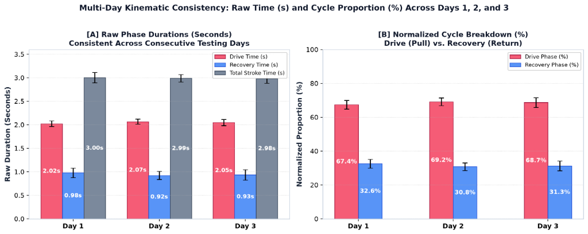

Official companion open dataset and interactive telemetry dashboards for the research study: "Multi-Modal Sensor Synchronization and Palmar Force Metrology in Indoor Rowing Ergometry", presented at The 7th Global Conference on Biomedical Engineering & Annual Meeting of Taiwanese Society of Biomedical Engineering (GCBME 2026 / TSME).
@misc{chen2026rowing,
author = {Chen, Shing-Jye and Firdaus, Tegar Anugrah and Syaifudin, Achmad},
title = {Multi-Modal Rowing Ergometer Telemetry and Biomechanical Decoupling Dataset},
year = {2026},
publisher = {Taiwan Institute of Sports Science (TISS)},
howpublished = {\url{https://sj0813.github.io/rowing_data1/}},
note = {The 7th Global Conference on Biomedical Engineering (GCBME 2026)}
}
Comparison of Raw Phase Durations (Drive 2.02–2.07s, Recovery 0.92–0.98s, Total 2.98–3.00s) and Normalized Cycle Proportions (Drive 67.4–69.2%, Recovery 30.8–32.6%) across all 295 consecutive strokes over 3 testing days.
Continuous raw signals across physical seconds without time normalization. 6 vertically aligned panels: Loadcell Pull (0–320 N), Novel Hand (0–500 N), Novel Thumb (0–50 N), Footplates (0–550 N), Foot Sub-Regions (0–200 N), and 3-Way Gyros (0–300 °/s).
Independent kinematic synchronization using 3-axis resultant angular velocity (G_res). Toggle between Before Sync (Raw Clocks) and After Sync (Aligned Time), compare 1-column stacked vs overlay, and inspect hardware clock drift (~103 ppm).
Catch-to-Catch (F > 6.0 N) stroke cycle dissection. Drive ($2.14 \pm 0.09 ext{ s}$, $71.5\%$) and Recovery ($0.86 \pm 0.12 ext{ s}$, $28.5\%$) phase breakdown, cadence ($20.02 \pm 0.80 ext{ SPM}$), superimposed 0–100% curves, and complete 295-stroke table.
Phase durations (seconds) and normalized proportions (%) across 295 consecutive strokes (Day 1: 96, Day 2: 100, Day 3: 99).

Figure 2: Multi-day kinematic consistency: [A] Raw phase durations (seconds); [B] Normalized cycle proportions (%) across consecutive testing days.
| Biomechanical Metric | Day 1 (N = 96) | Day 2 (N = 100) | Day 3 (N = 99) | All Days (N = 295) |
|---|---|---|---|---|
| Drive Duration (s) | 2.02 ± 0.06 s | 2.07 ± 0.05 s | 2.05 ± 0.06 s | 2.05 ± 0.06 s |
| Recovery Duration (s) | 0.98 ± 0.09 s | 0.92 ± 0.09 s | 0.93 ± 0.11 s | 0.94 ± 0.10 s |
| Total Stroke Duration (s) | 3.00 ± 0.11 s | 2.99 ± 0.08 s | 2.98 ± 0.09 s | 2.997 ± 0.122 s |
| Drive Phase Fraction (%) | 67.4 ± 2.6% | 69.2 ± 2.2% | 68.7 ± 2.8% | 68.4 ± 2.6% |
| Recovery Phase Fraction (%) | 32.6 ± 2.6% | 30.8 ± 2.2% | 31.3 ± 2.8% | 31.6 ± 2.6% |
| Stroke Cadence (SPM) | 20.05 ± 0.76 | 20.15 ± 0.71 | 19.96 ± 0.93 | 20.05 ± 0.81 |
| Peak Handle Pull Force (N) | 261.9 ± 29.5 N | 238.1 ± 33.7 N | 226.8 ± 27.7 N | 242.1 ± 33.6 N |